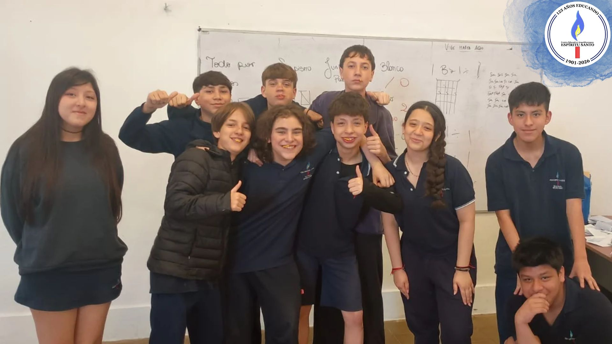
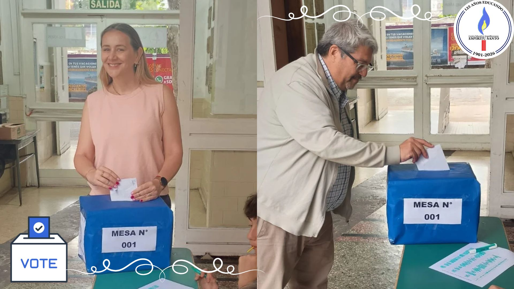
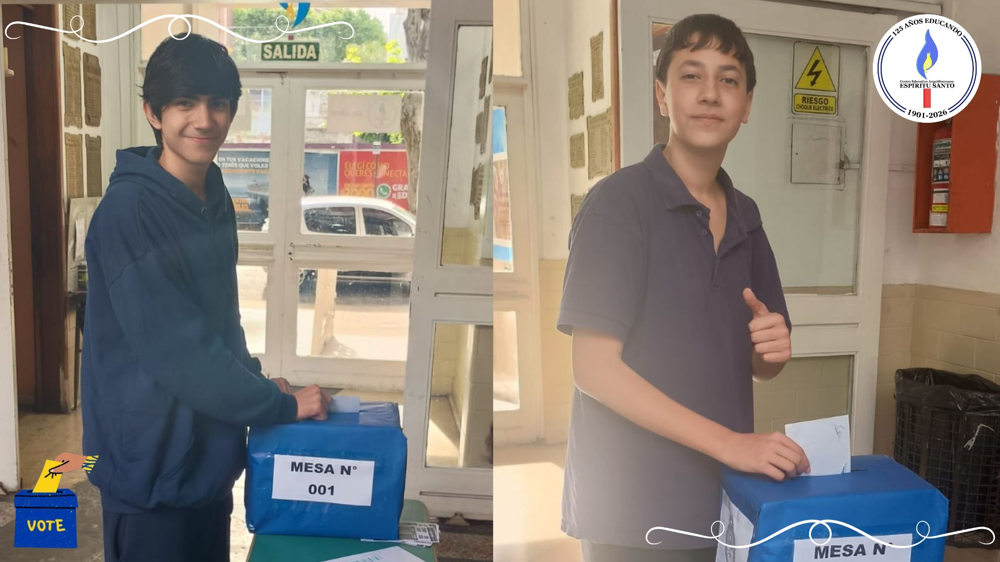

Simulacro de elecciones generales 2º A y B
Por: Guillermo Garófalo

Participaron alumnos de 2º A y B
En el marco de la asignatura Formación Ética y Ciudadana, los estudiantes de 2º año llevaron adelante un proyecto que tuvo como objetivo acercarlos a la vida democrática a través de la realización de un simulacro de elecciones.
La propuesta comenzó con el aprendizaje sobre qué es un partido político, cuáles son sus principales funciones y qué papel desempeña dentro del sistema democrático. A partir de estos conocimientos, los alumnos pusieron en práctica lo aprendido mediante la creación de sus propios partidos políticos, la elaboración de propuestas y la elección de sus candidatos para participar en las elecciones primarias (PASO).

Una vez finalizada esta primera instancia, los candidatos iniciaron sus respectivas campañas electorales, en las que buscaron dar a conocer sus propuestas y convencer a los votantes. Para ello, contaron con la participación de diversos docentes que se sumaron al proyecto y asumieron el rol de electores.
Finalmente, el simulacro electoral se llevó a cabo en 2.º A el martes 3 de noviembre y en 2.º B el jueves 5 de noviembre, dando cierre a una experiencia que permitió a los estudiantes vivenciar de manera práctica el funcionamiento de un proceso electoral.
En 2º A, resultó ganador el partido Todo por Todos, con la fórmula Colombo–Torrez, que obtuvo el 41 % de los votos. Por su parte, en 2º B, el triunfo fue para el partido Estudiantil para la Gestión y Organización, con la fórmula Monzón–Sorbilli, que alcanzó el 45 % de los votos.

Leer otras notas
Obras de Teatro a cargo de 2º y 4º A y B
Papa León XIV en Argentina: Vigilia con los jóvenes en Buenos Aires
Publicidad